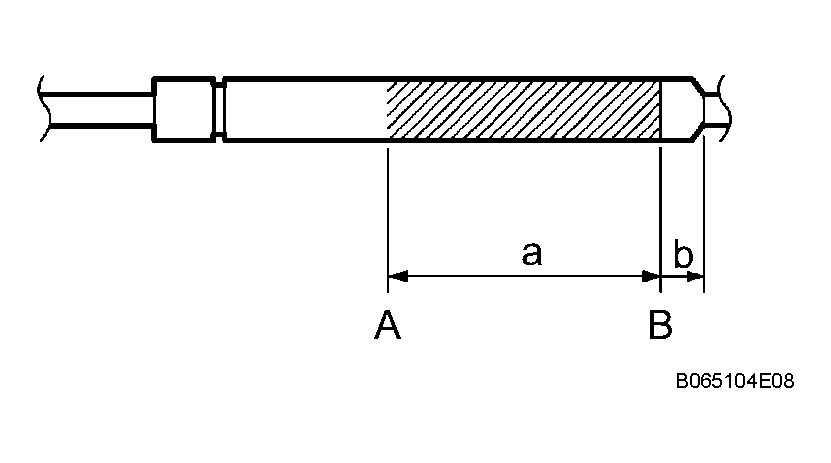

Back Door Support: Disposal
HINT:
Use the same procedure for the RH side and LH side.
- DISPOSE OF BACK DOOR STAY SUB-ASSEMBLY LH
- Horizontally fix the stay in a vise with the piston-rod pulled out.
- Using a metal saw, gradually cut any area between A and B to release the gas.
Specification
STAY SPECIFICATIONSArea Specified Condition a 80 mm (3.15 in.) b 20 mm (0.80 in.) 
Courtesy of © TOYOTA, LICENSE AGREEMENT TMS1002CAUTION: As metal debris may be blown outward by the gas, you must:- Wear protective glasses.
- Cover the area being cut.
NOTE: The gas is colorless, odorless and harmless.